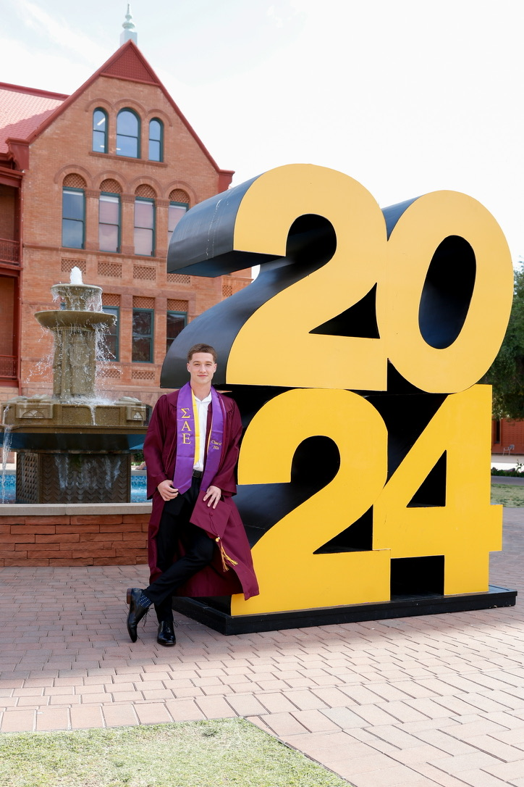

<!DOCTYPE html>
<html lang="en"></html>
<head>
    <meta charset+"UTF-8">
    <title>My Resume</title>
</head>

<body>
    <h1>Max Weinmeister</h1>
    
    <h2>Summary</h2>
    <hr />
    Looking for a Supply Chain Management role with a dynmaic organization, where I can contribute to the growth and scaling of the enterprise. Areas of intrest include procurement, operations, and inventory management and optimazation. 
    <h2>Overview</h2> 
    <hr />
    I am an Arizona State graduate with a degree in Supply Chain Management. Since graduating I have been able to utilize the knowledge gained in a practical manner and create a lasting impact for the business. I am always challenging myself to keep learning and lead by example in any environment that I am in. 
    <h2>Experience and Projects</h2>
    <hr />
    <ul>
        <li><h3>Oak Canyon Manufacturing - Buyer</h3></li>
        <ul>
            <li>Analyzed and maintained 3 different critical path product categories </li>
            <li>Created, designed, and implemented an inventory barcode scan system with automated inventory alerts and purchase order generation, reducing all satfey stocks by 50%.</li>
            <li>Improved supplier lead times, price discrepency communication, and overall supplier relations by implementing a supplier scorecard for critical suppliers.</li>
        </ul>
        <br />
        <li><h3>Keyholder - Cold Beers and Cheesburgers</h3></li>
        <ul>
            <li>Perform end of day closing operations and financial activities.</li>
            <li>Improved multiple processes within the store, helping foster a more efficent workplace</li>
            <li>Developed and trained over 20 employees, implementing a SOP training process</li>
        </ul>
        <li><h3>Philanthropy Lead Chairman</h3></li>
        <ul>
            <li>Revitalized philanthropy events, raised over $30,000 to be donated to CASA Center for Positive Social Chnage through planning and executing over 20 fundraising events, major improvement from the previous years $2,000.</li>
        </ul>
    </ul>
    <h3>Education</h3>
    <hr />
    <p><b>W.P. Carey School of Business, Arizona State University</b></p>
    <p><b>Bachelor of Science</b> in Supply Chain Management</p>
    Clubs: Sigma Alpha Epsilon
    <br />
    Courses: Supply Management, Supply Chain Control Systems, Global Supply Chain Management, Logistics Management, Supply Chain Negotiations
    <br />
    <h3>Other</h3>
    <hr />
    <ul>
        <li><a href="./ContactMe.html">Contact Me</a></li>
    </ul>
</body>